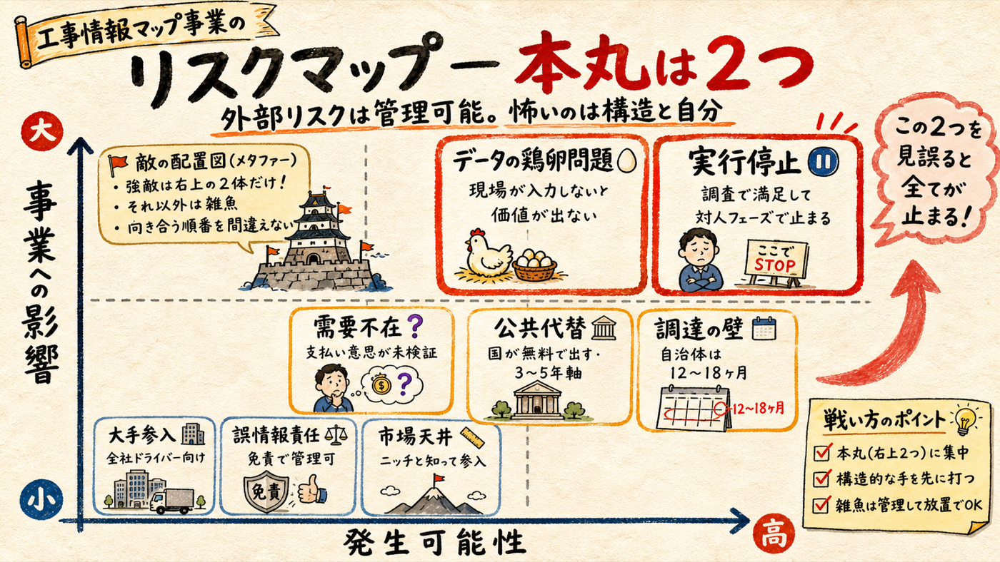
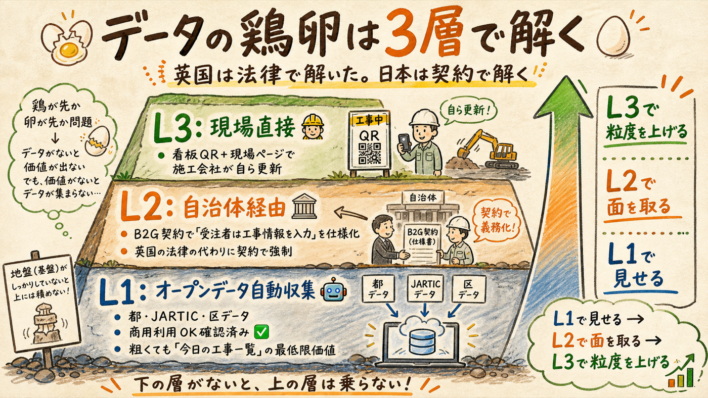
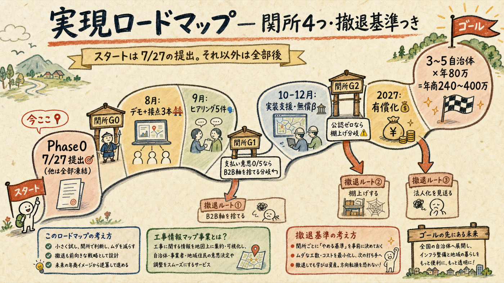
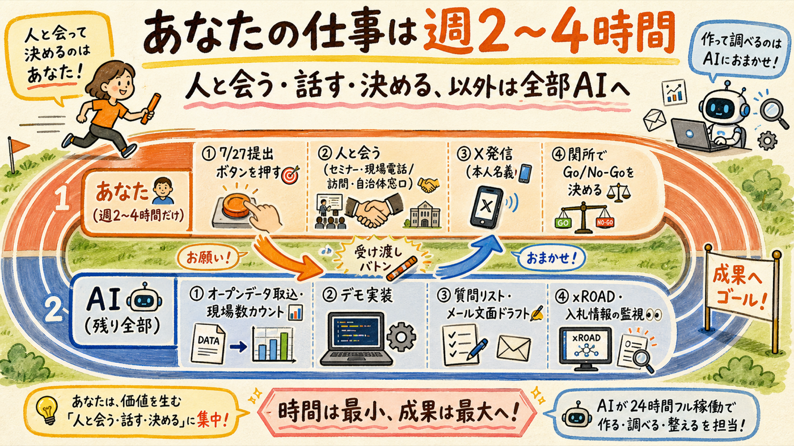

リスクは8つ洗い出したが、追加調査の結果、外部リスク（国の公共代替・大手参入・法的責任・データ利用制限）はいずれも管理可能と確認できた。本当に怖いのは「データ供給の鶏卵問題」（構造）と「対人フェーズで実行が止まること」（内部）の2つ。ロードマップはこの2つを正面から潰す設計にし、各関所に撤退基準を付けた。
8つ洗い出して、6つは管理可能と確認できた

| リスク | 評価 | 根拠（調査結果） | 対策 |
|---|---|---|---|
| R1 実行停止（内部） | 高 | ここまでの前進3本はすべてデスクワーク。次フェーズは「人と会う」で、性質が変わる。調査・構想は快適で、対人接触は先延ばししやすい | ゲート制。週次の進捗指標を「人と話した数」だけにする。調査の追加はAIに投げて自分ではやらない |
| R2 データの鶏卵（構造） | 高 | 日本には英国Street Managerのような工事登録の法義務がない。現場が入力しないと詳細データは生まれず、詳細データがないと使われない | 3層データ戦略（セクション03）。オープンデータで先に価値を見せ、自治体契約で入力を仕様化する |
| R3 需要不在 | 中〜高 | B2B支払い意思は推定のみ（あなた自身の住民体験からも疑義あり）。B2G導入意思も未確認 | G1ゲート（9月ヒアリング5件）で検証。0/5ならB2B軸を廃棄しB2G単独に転換 |
| R4 公共代替（国が無料で出す） | 中 | xROADのAPI公開は現状交通量のみ（直轄国道約2,600箇所・一次確認）。工事規制APIは構想の記述のみで具体計画なし。ただし構想に明記あり | 3〜5年軸でAIが監視。国データが来たら競合ではなく無料の仕入れとして取り込み、「集約＋歩行者UX」レイヤーに軸足を移す |
| R5 大手参入 | 低〜中 | ナビタイム=ドライバー向け、ゼンリン=車両・自治体向け、Googleはユーザー報告ベースで誤表示事例あり（一次確認）。歩行者向けは全社手薄 | スピードと現場関係の堀。大手が動く前に自治体公認と現場接点を押さえる |
| R6 調達の壁・営業サイクル | 中 | 自治体は年度予算で導入まで12〜18ヶ月。個人の3関門（B2G調査で確認済み） | 都知事杯実装支援→GovTech東京窓口で通常営業を短絡。法人化はG3まで待つ |
| R7 誤情報の法的責任 | 低 | 誤案内で情報提供者の賠償責任を認めた公表判例は確認できず [未確認]。実務は免責表記が標準 | 「現地の規制・標識が常に優先」明示＋利用規約の免責＋B2G契約に責任限定条項。設計段階から組み込む |
| R8 市場天井・一人運営 | 中 | SAM上限は全国年10億弱のニッチ（収益化調査）。B2G営業＋開発＋運用を一人で回す持続性 | 期待値を最初から「年商240〜400万」に設定。拡大は看板業界OEM等のチャネルで、自分の時間を増やさずに行う |
※ R4/R5/R7の根拠出典: xroad.mlit.go.jp、各社公式サイト、国交省判例集。データ商用利用は都オープンデータ利用規約（CC BY 4.0）・JARTIC利用規約第2条で「可」を一次確認。すべて2026-07-10取得。
やる前から詰んでいる要素は無いことを確認した
結論: 外部環境に「今すぐ撤退すべき理由」は見つからなかった。リスクの重心は外ではなく、構造（鶏卵）と実行（自分）にある。
英国は法律で解いた。日本では契約で解く

「現場が入力しないと価値が出ない、価値がないと入力されない」— この鶏卵を一気に解こうとしないのが要点。Layer 1（オープンデータ自動収集）: 都・JARTIC・区のデータを自動取込。粗くても「今日の工事が1画面で見える」だけで既存サービスより上（歩行者向けは空白なので）。ここはAIと自動化だけで作れ、誰の協力も要らない。Layer 2（自治体経由）: B2G採用時に「受注者は工事情報を本システムに入力すること」を発注仕様に入れてもらう。英国で法律がやったデータ供給の強制を、日本では契約で代替する。Layer 3（現場直接）: 看板QR＋現場ページで施工会社が自ら更新。ここまで来ればデータの堀は完成。
何もない状態からの道順。各関所で「進む/曲がる/止まる」を決める

| フェーズ | やること | 関所（判断基準） |
|---|---|---|
| Phase 0 今〜7/27 | おさんぽセーフティの提出3手（login→deploy→提出）のみ。事業構想は全部凍結 | G0: 提出完了。これが全ルートの起点で、未完なら以降のすべてが無い |
| Phase 1 8月 | ①L1データ取込でギャップ可視化デモ＋現場数実カウント（AI主担当） ②接点3本: 無料セミナー申込・区の道路管理課問い合わせ・X建設DX界隈に実物投稿（本人） | —（仕込みフェーズ。ゲートなし） |
| Phase 2 9月 | 工事看板→施工業者ルートで現場ヒアリング5件＋自治体1〜2件。聞くのは「問い合わせ週何件・誰が受ける・発注者から周知に何を求められるか・いくらなら払うか」 | G1: 支払い意思が5件中0なら、B2B軸を廃棄してB2G単独へ転換（撤退ではなく軸の整理） |
| Phase 3 10〜12月 | 都知事杯Final Stage→実装支援→GovTech東京窓口で道路管理課に接続。1自治体の無償β（公認実績づくり）。余力があれば看板QRテスト1現場 | G2: 年度末までに公認実績ゼロなら、区へ直接提案3件。それでもゼロなら事業を棚上げし、おさんぽセーフティは個人開発として維持 |
| Phase 4 2027年〜 | 無償βの実績をもとに有償化打診（MCR型: 初期30〜50万＋年額50〜100万）。3〜5自治体で年商240〜400万へ | G3: 具体的な金額の話が出た時点で法人化を判断（それまで法人は作らない） |
撤退基準を先に決めておく理由: Maximizer型は「もう少し調べれば・もう少し磨けば」で無限に続けられてしまう。G1・G2の基準は今日決めたものを使い、当日の気分で動かさない。基準に達しなければ、それはあなたの失敗ではなく仮説の反証 — 一次情報を取りに行った成果そのもの。
「人と会う・話す・決める」以外は全部AIに投げる

| あなたにしかできないこと（週2〜4時間） | AIに投げること（あなたはやらない） |
|---|---|
| ① 7/27までに提出3手を実行する（今週・最優先） | 提出手順の整理・つまずき対応・デプロイ作業の支援 |
| ② 人と会う: セミナーに実際に行く、工事看板の番号に電話する、現場事務所を訪ねる、自治体窓口へメールを送る（送信者は本人） | アポメール・問い合わせ文面のドラフト、質問リスト設計、ヒアリング結果の分析と次回質問への反映 |
| ③ X建設DX界隈へ本人名義で発信する | 投稿文案・スクショ素材の準備 |
| ④ 関所G0〜G3でGo/No-Goを決める | 判断材料の収集・整理（この資料のような形で毎回提出） |
| — | L1データ取込の実装、現場数の実カウント、ギャップ可視化デモ、xROAD・入札情報・競合の定点監視 |
この分担の意味: 事業が前に進むかどうかを決める変数は、今後は「コードの量」でも「調査の深さ」でもなく「あなたが人と接触した回数」だけ。デスクでできることはすべてAI側のレーンに置いた。逆に言えば、週2〜4時間の対人行動さえ確保できれば、この事業は回る設計になっている。
今週はこれ以外やらない
| # | アクション | 担当 |
|---|---|---|
| 1 | おさんぽセーフティ: login → deploy → 提出（締切7/27に対し2週間以上の余裕を持って完了させる） | あなた（AIが伴走） |
| 2 | 8月の無料建設DXセミナーを1本選んで申し込む（15分で終わる） | あなた |
| 3 | 事業構想の追加調査・機能アイデア出しは一切しない（湧いたらメモしてAIに投げる） | — |